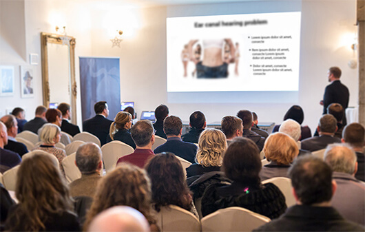
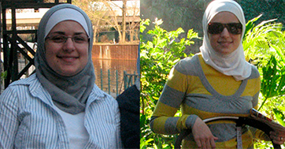

4 كجم أقل
نهاية حقبة الوزن الزائد!
طوّر الأستاذ الجامعي (الدكتور) علاجاً يساعد على إنقاص الوزن سريعاً –
14 كجم في شهر واحد دون الشعور بالجوع، ودون جهد، ودون تردد.

يشعر أخصائيو التغذية بالقلق حيال عملهم. هل تتسبب طريقة إنقاص الوزن الجديدة في فقدان الآلف من أخصائي التغذية وظيفتهم؟ لا يشك أخصائيو التغذية في أن هذا سيحدث. بتطوير تركيبة إنقاص الوزن الطبيعية الجديدة، على يد الدكتور الإمارتي، توصلنا أخيراً إلى التقدم الذي طمحنا إليه طويلاً في كفاحنا ضد الوزن الزائد.
فقد أكثر من 28 ألف شخص بالفعل 14 كجم في غضون 28 يوماً في المتوسط – دون جهد وبطريقة آمنة ودون تردد. ونتيجة لذلك، تقلص خطر التعرض لاحتشاء العضلة القلبية والسكتة بواقع 185%، وانخفضت مستويات الكوليسترول الضار بواقع 15 مرة وجرى إنقاذهم من التصلب التّعصُّديّ. لقد استعادوا مظهرهم الجذاب، وثقتهم بأنفسهم والحالة المزاجية الممتازة.كيف يمكن ذلك؟
قرر البروفيسور (الأستاذ الجامعي) إسماعيل قورييف (أخصائي الأحياء المصغرة) أن يحرر زوجته ويخلصها من السِمنة المتنامية والمعقدة. كانت هذه بمثابة البداية لثورة في مجال مكافحة الوزن الزائد. طوّر البروفيسور، بعد عام من الأبحاث المعملية والمختبرية المتقدمة، تركيبة إنقاص الوزن التي تعد طبيعية وآمنة وسهلة الاستخدام . بفضل هذه التركيبة، فقدت زوجة البروفيسور 52 كجم في غضون فترة أقل من شهرين ومثما تقول– "استعدت جسمي النموذجي"!
وبالفعل أطلقت المجلات الطبية الاحترافية على هذا العلاج "طفرة رائدة في تطبيق مبادئ التغذية والحمية الغذائية" ، وتلقى البروفيسور قورييف بالفعل بعض الجوائز المرموقة على هذا الاكتشاف العلمي. بفضل مفعول التركيبة التي توصل إليها، يمكن للناس حتى هؤلاء الذين ظلوا لسنوات عديدة يعانون من الوزن الزائد (بغض النظر عن أسبابه) أن يفقدوا ما يقرب من 28 كجم في غضون شهر – بصورة فعالة دون الشعور بالجوع ودون ممارسة التدريبات البدننية.
"يعد نظام التنحيف مرهقاً للغاية وغهدار للمال!" لم قد يفكر أحد الأشخاص في ذلك؟
أكد على هذا الكلام أكثر من 14 ألف مستخدم شعروا بالرضا حيال تركيبة إنقاص الوزن الطبيعية، والذين تمكنوا من إكمال العلاج والاستمتاع بمظهر نحيف. وهذا هو السبب في أننا وضعنا أنظمة الحمية الغذائية الخاصة بإنقاص الوزن المعروفة حتى الىن تحت عدسة مُكبّرة. وبدقة أكثر، لمعرفة السبب في عدم تحقيق النتائج المنشودة. إليكم النتائج:
-
الهواة أو قليلو الخبرة هم من يتبعون معظم أنظمة الحمية الغذائية
لكي تفقد 4 كجم بشكل متواصل، يجب أن تصوم لمدة شهرين ونصف في المتوسط. وهذا يعني أنه لكي تصل إلى الوزن المنشود، تحتاح إلى بضع سنوات من المعاناة. . يجب أن تتخلى عن تناول الاطعمة اللذيذة وأن تقاوم نفسك، لكي لا تنجذب إلى البيتزا والحلوى أو الكعكة التي تفضلها. يحدث كل هذا بسبب أن 98% من برامج الغذائية يقوم بها الهواة أو قليلو الخبرة. أم الناس الذين ليست لديهم فكرة عن الأداء الوظيفي للكائن الحي، والجهاز الهضمي والتغذية المناسبة. تعتبر هذه الأنظمة الغذائية ضارة للجسم، وخطيرة على الصحة وغير فعالة بتاتاً.
-
تعمل الانظمة الغذائية على إضعاف الجسم والمناعة
وتؤدي الانظمة الغذائية إلى قصور في الفيتامينات والعناصر الصغيرة. ويهدر الجسم طاقته، وهذا هو السبب في شعورنا بالتعب، والغضب والنُعاس . تتدنى عملية مقاومة الفيروسات والبكتيريا بشكل ملحوظ، مما يؤدي إلى الإعياء والمرض المتكرر.
-
تعتبر منتجات الحمية الغذائية خطيرة على الصحة
يجذب منتجو الطعام انتباه الزبائن "عن طريق أطعمة "الحمية الغذائية". ولسوء الحظ، حتى لو كانت تحتوي على الكثير من الألياف، فإنها مليئة بالسكر، الذي – كما تعرفون – يزيد الوزن أكثر من الهامبرغر. وعلى الجانب الآخر، تحتوي المنتجات التي لا يوجد بها سكر مضاف على مواد مُحليّة مُسرطنة !
-
إن اتباع نظام غذائي يعني الشعور المستمر بالجوع، والتقشف والندم
تعتبر المقاومة المستمرة للشهية ورفض الاستمتاع بتناول الطعام شعوراً غير قابل للمقاومة . وعلى الصعيد الآخر، تصبح الشهية النهمة التي تشبع أثناء تناول الوجبات مع الأسرة أو الأصدقاء شعوراً مؤلماً بالندم.
-
إن اتباع النظام الغذائي مكلف للغاية.
تصل تكلفة الزيارات الشهرية لأخصائي تغذية مؤهل لما لا يقل عن 100 يورو. وفي الوقت ذاته، تعتبر جميع منتجات الانظمة الغذائية التي تحتوي على سُعْرات حرارية منخفضة مكلفة للغاية. ونتيجة لذلك، ننفق أربعة أضعاف من المال من أجل الحصول على أطعمة الانظمة الغذائية أكثر من الأطعمة العادية. وللحفاظ على الوزن، يجب أن نتناول الطعام بهذه الطريقة لبقية حياتنا. لا يمكن لدخل أن يستمر على هذا النحو للأبد.
-
بعد اتباع نظام الحمية الغذائية، يظهر تأثير التردد.
نتيجة للضعف الناجم عن الجوع، يبدأ الجسم تلقائياً في تجميع احتياطي للطاقة لاستخدامها في وقت لاحق، ولذا تتباطأ عملية الأيض – إلى أن تتوقف تماماً. ونتيجة لذلك، وبعد اتباع نظام الحمية الغذائية، يعود الجسم إلى وزنه السابق، أسرع من الفترة التي استغراقها في إنقاص الوزن.
وبالتالي، تعتبر تركيبة إنقاص الوزن التي توصل إليها الدكتور قورييف اكتشافاً حقيقياً لمقاومة المظهر النحيف.
تشير حمية التنحيف إلى التضحية بالصحة والطاقة والكثير من المال. إذ تتمثل في إحصاء السُعرات بصورة مستمرة، والانتباه لمواعيد الوجبات وعدم الشعور بالسعادة أثناء تناول الطعام. والنتيجة هي الجوع والإرهاق وتدمير الجسم . ندفع هذا الثمن الباهظ من أجل ... خيبة الامل، نظراً لأن التأثيرات غير ملحوظة في المعتاد. وعلى الفور يظهر تأثير التردد، والذي يدمر كل الجهود والتضحيات طويلة الأمد.
الدكتور قورييف "تعمل تركيبة التخسيس الطبيعية على النقيض من ذلك تماماً. إِذْ لا يتحتم على الابتعاد عن أي شيء، أو حتى الاعتناء بنوع الطعام وموعد تناوله أو حتى أن تعاني بسبب الشعور المستمر بالجوع. وتتم عملية حرق الدهون تلقائياً. وكما وصف أحد الباحثين: "تفقد الوزن وأنت جالس أمام التلفاز" بالإضافة إلى ذلك، يُعيد العلاج عملية الأيض إلى كفاءتها المعهودة سابقاً و يمنع تأثير التردد بشكل دائم. . وتعتبر تكلفة كل هذا أقل من احتساء علبة كوكاكولا كل يوم!
في الوقت الحاضر يمكن للجميع أن ينعموا بإنقاص الوزن دون مجهود وعلى نحو سريع وبصورة آمنة.
تتوافر تركيبة إنقاص الوزن التي توصل إليها الدكتور قورييف في متاجر التجزئة باسم . يمكن تناول هذا العلاج على النحو التالي: فوار في كوب من الماء واشربه قبل تناول الطعام بـ 30 دقيقة. يعتبر الاستعمال آمن تماماً، كما هو موضح من البحث الإضافي الذي أُجري في مركز الأبحاث الأمريكي في شيكاغو. أظهرت هذه الدراسات أيضاً أن العلاج فعال بنسبة تزيد على 98% . بفضل هذا العلاج، خسر الأشخاص الذين تتراوح أعمارهم بين 38 – 93، في غضون 28 يوماً فقط، 28 كجم في المتوسط، بغض النظر عن العمر، والطول وأسباب الوزن الزائد.
فعالية مؤكدة
هؤلاء الأشخاص، في غضون بضع ساعات بعد تناول أول عبوة، بدأوا بالفعل في تنظيف أجسامهم من الرواسب السامة والسموم، وقاموا بقمع الشهية الزائدة ودخلوا مرحلة الحرق المكثف للسعرات الحرارية. وفي الأيام التالية، توقف الأشخاص الذين جرى اختبارهم عن تناول الطعام لتخفيف الضغوط والتوتر وتغلبوا تماماً على نوبات الجوع. . بعد ذلك، ومن يوم لآخر، لاحظوا أن وزنهم أقل يقل يوماً بعد يوم وأن مقاس منطقة الخصر والفخذ والورك قد تقلص بمعدل بضع سنتيمترات كل يوم!
ولكن هذا ليس كل شيء. كما انخفضت مستويات الكوليسترول الضار والسكر في الجسم. كما حظي هؤلاء الذين خضعوا للتجربة، في المتوسط، بثلاثة أضعاف أكثر من الطاقة وتحسن مزاجهم أكثر بخمس مرات من ذي قبل، وذلك عن طريق استخدام تركيبة إنقاص الوزن التي توصل إليه الدكتور قورييف.
تتحدث التأثيرات الموثقة للعلاج عن نفسها:
6 كجم أقل
8 كجم أقل
10 كجم أقل
الأسبوع الأول
الأسبوع الثاني
الاسبوع الثالث
الأسبوع الرابع
الأسبوع الأول - التخلص من الترسبات المعوية، وتنظيف السموم، واختفاء الشهية المفرطة، وانخفاض الوزن بمعدل 5 كجم
الأسبوع الثاني - قلة الشعور بالجوع، وتحسن عملية الأيض، وتسريع عملية حرق الدهون، وانخفاض الوزن بمعدل 4 كجم أخرى
الاسبوع الثالث - حرق الدهون تلقائياً، وتقليل مستويات الكوليسترول والسكر وانخفاض الوزن بمعدل 3 كجم
الأسبوع الرابع - الحصول على 3 أضعاف أكثر من الطاقة، وتنظيم عملية الأيض ومنع تأثير التردد، وانخفاض الوزن بمعدل 4 كجم تقريباً (وهو ما مجمله 28 كجم في شهر واحد)
تعتبر علياء (37 سنة) من الشارقة من أوائل الناس في الإمارات الذين استخدموا :
"ليس من فترة بعيدة، لطالما شعرت بالخجل من الثنايا والطيات الدهنية، كنت أخفيها أسفل طبقات الملابس الفضفاضة. حاولت التخلص من الوزن الزائد كثيراً، لكن لم أحصل على نتيجة، لدرجة أنني ذهبت إلى اخصائي التغذية. أهدرت جزءاً كبيراً من مرتبي ودخلي على هذه الزيارات ولم يُجدي الأمر نفعاً. كان علي أن أقدم تفسيراً لكل قطعة كعك وكل كوب من النبيذ. ممارسة التمارين؟ كيف يمكن لي بعد يوم من العمل الطويل أن أجهد نفسي بممارسة التمارين في صالة الألعاب الرياضية؟ ومن بإمكانه الاعتناء بالمنزل والأطفال والكلب؟ ثم تعرفت بمرور الوقت على . والآن أعرف أنه إذا قمت باستغلال فرصة هذا العلاج – لما ارتكبت أي خطأ في حياتي. كنت بدينة إلى درجة كبير مثل البرميل، ولكن كانت 4 أسابيع كافية لكي أصبح أنحف من ابنة أختي المراهقة. لم أحرك حتى إصبعي، فقط تناولت تركيبة التخسيس هذه وفقاً للتعليمات. من مقاس 44، حصلت على مقاس 38، واستعدت ثقتي بنفسي وينتابني شعور مذهل لم اشعر به من قبل. يحسدني زملائي في العمل على جسمي الممشوق. أنصح الجميع باستخدامه!"
لم يجب أن تعاني من السمنة وتجهد نفسك باتباع الأنظمة الغذائية، إذا كان من الممكن أن تنقص وزنك بسهولة، على نحو سريع واقتصادي ؟
لقد ثبتت فعالية تركيبة إنقاص الوزن بدون شك عن طريق مركز الأبحاث الأمريكي في شيكاغو. ويتلقى الدكتور قورييف باستمرار مراجعات إيجابية من خبراتء مشهورين، بالإضافة إلى جوائز مرموقة على الإنجاز العلمي والبحثي.
تكمن الأخبار الجيدة في أنه يمكنك الحصوص على تركيبة إنقاص الوزن التي توصل إليها الدكتور قورييف، للاشتراك من أجل الحصول على السعر المخفض، فضلاً عن التمويل المشترك، أقل بمعدل 200 درهم امارتي. يتوافر عرض خاص حتى نهاية الفترة . يمكن الحصول على العلاج فقط من الموقع الموضح أدناه.
انقر هنا لتستلم العلاج مع الحصول على تمويل مشترك وتفقد ما يزيد على 14 كجم في شهر واحد >>عرض خاص، يتوافر حتى يوم الخميس فقط

التعليقات
اقرأ التعليقات على مقالة "نهاية حقبة الوزن الزائد! العلاج المبتكر للدكتور الإمارتي...
حمدان
ويقولون أن الإمارتيون غير ناجحين على مستوى العالم. يا له إنجاز عظيم. تهانينا إلى الدكتور الزميل!
ريما
استخدمت هذا العلاج، حصلت عليه بالمشاركة في السعر المخفض، كانت تكلفته قليلة للغاية، وفقدت الوزن في نهاية المطاف! أشعر بانني شخص آخر. أنصح الجميع باستخدامه بكل حب.
خلود
استخدمته أيضاً وخسرت الوزن حتى بالرغم من أعضائي الحيوية، وهو أمر وراثي، يميل إلى اكتساب الوزن. إنه بسيط للغاية، لقد كتبت بالفعل عن هذا التحول على مدونتي وأنصح الجميع باستخدامه! :)
آمنة
شعرت بالإحباط جراء استخدام العديد من مكملات إنقاص الوزن، ولم يجدي أي شيء نفعاً، كان ذلك بمثابة إهدار للمال وحسب. لكنني أخبركم بصراحة أن هذه هي أول طريقة أجدت نفعاً معي. استخدمته لشهر واحد فقط، لكنني توقفت عن تناول الطعام أثناء الليل وأصبحت شهيتي أقل في العموم. أتناول القليل وأشعر أنني بصحة أفضل وأكثر خفة. كما يمكنني أتناول ما أشتهيه. لقد تخلصت بالفعل من 8 كجم واختفت التكتلات الدهنية، أتطلع إلى الأسبوع الرابع!!
سالم
السادة والسيدات، سأوضح رأيي لأنني قاومت السمنة على مدار 7 سنوات. كرجل، أحب احتساء الجعة من وقت لآخر وأن أتناول شيئاً جيداً. كانت زوجتي تزعجني وتضايقني طوال اليوم لفعل شيء حيال هذا الأمر، لأن معدل الكوليسترول كان مرتفعاً وأن البدانة غير صحية. أحضرت ابنتي لي هذا العلاج من الولايات المتحدة، ولذا جربته لكي تتوقف زوجتي عن إزعاجي. لكنني لم أغير أسلوب حياتي. لكنني خسرت 20 كجم في غضون 3 أسابيع، وكانت تحاليل الدم رائعة. هذه قصتي، والىن أشعر أنني اتمتع بصحة جيدة وتخلصت من إزعاج زوجتي.
زياد
استخدمت أنا أيضاً وكان رائعاً بالنسبة لي! استخدمته لمدة أسبوعين فقط، لكن أصبحت البناطيل واسعة كثيراً. جربوه بأنفسكم، لم ألاحظ أي تعليق سلبي عن طريقة إنقاص الوزن هذه بعد.
جميلة
لم أتوقع هذه المعجزات عندما دخلت إلى هذا الموقع. لذا يجب أن احصل على هذا العلاج. لقد سئمت من بطني الكبير والمعاناة بسبب الفخاذ البدينة. إنه شيء يجدي نفعاً في نهاية المطاف.
سالمة
خسرت 32 كجم. منذ 30 يوماً، كان وزني 156 كجم، والأن أصبح 124 كجم فقط. أنصح بطلبه عندما يكون الخصم متوافر 
محمد
في هذه الأيام، يعاني الجميع من رواسب في أمعائه، والجسم مليء بالسموم. وليس من المدهش أن يكون هناك أشخاص يعانون من الوزن الزائد. يا له من أمر رائع أن تكون هناك طريقة لتنظيف الجسم وحرق الدهون
روضة
لدي سؤال لهؤلاء الذين استخدموه. هل عانى أحدكم من السمنة منذ الطفولة (وليس بعد الحمل أو العلاجات، فقط منذ الطفولة) وفقد الوزن بهذه الطريقة؟
يوسف
بالطبع نعم، أنا، على سبيل المثال. بالنسبة لعائلتي، كان الجميع يعاني من البدانة. ولكن بعد مرور 3 أسابيع من استخدام لم أعد أُشْبِه أقاربي :)
روض
يوسف، شكراً جزيلاً لك على الرد. سأجازف وأجربه أنا أيضاً، ليس هناك ما أخسره...
سارة
خسرت 30 كجم عن طريق العلاج الذي ابتكره الدكتور :) أنصح الجميع باستخدامه
جابر
سأستخدمه، لكنني خائف ألا يُجدي نفعاً. لقد انفقت بالفعل الكثير من المال على الطرق غير الفعالة.
جابر
قرأت للتو أنك شعرت برضاً تام بعد استخدام هذا العلاج. في هذه الحالة، لا توجد أي مخاطر. سأجربه بنفسي، أتمنى أن يُجدي نفعاً :)
عبدالله
خسرت والدتي الوزن عن طريق هذا العلاج بعد 20 عاماً من المشاكل الخطيرة الناجمة عن السمنة.
راشد
أنتظر استلام عبوتي، سأكتب عن تأثيراته لاحقاً